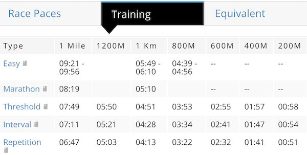

I Love It When A Plan Comes Together
a.k.a. Training Plan
After running two half-marathon races and having registered for a trail and a full marathon, a proper training plan was, somehow, required. Why having a training plan? Simply to run smart.
There is a lot of information on the web and in the bookshops… But, after doing some filtering, I ended up with with 5 YouTube videos to be watched, few YouTube channels to follow for tips and cool stories, and two books. It is of course a very personal choice and I am sure that I missed a lot of good stuff.
4 types of training
In these four short YouTube videos, Jack Daniels PhD, two-time Olympics medalist in modern pentathlon and named “The World’s Best Coach” by Runner’s World magazine, explains the different types of training.
I know what you think, but no, the man speaking in these videos is not involved in the distillation of whisky.
1- Easy Run
2- Threshold Training
3- Interval Training
4- Repetition Training
About the pace
You may then ask how to find the the paces associated to each type of training. The good news is that Jack Daniels takes care of that too!
Once you enter in the table below your last race distance and race time you will obtain the recommended paces of each training type.
For example, if you did race a 1h45 half-marathon, the recommended paces for the each types of training are:

A little note, on the paces.
From the suggested paces graph, you could note that there is a “no man’s land” pace zone between the easy run pace 5:09min/km and the threshold pace 4:51min/km. In other words, we should not run in this zone. The bad news is that I was essentially running in the “no man’s land” pace zone at about 5:30min/km, but the good news is that, now, I know I should not!
No pain No gain?
The Jack Daniels’s videos are actually enough. But I also found the following one-hour long video very useful too. Especially the easy run training, the training plan, and the periodization.
Few YouTube channels
- The Run Smart Project
- Vo2maxProductions
- Running Wild
- The Run Experience
A little bit of reading
Jack Daniels… again! Plus a book dedicated to marathon training was more than enough for me!